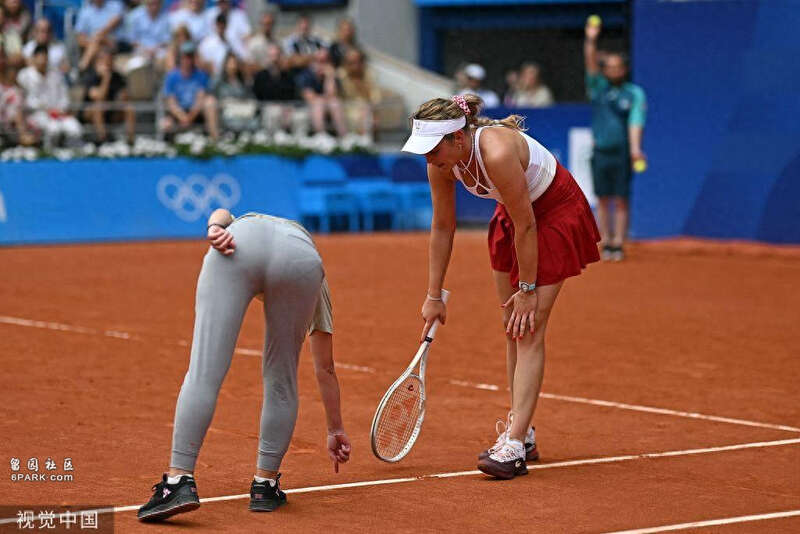
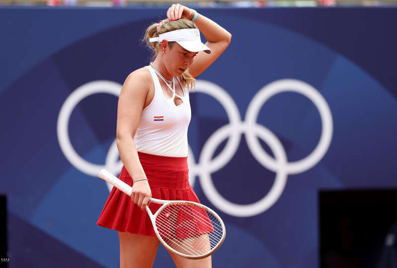
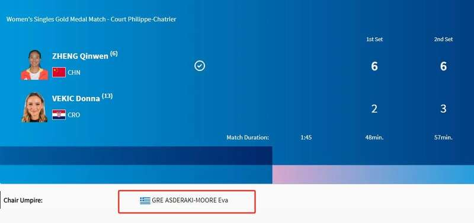
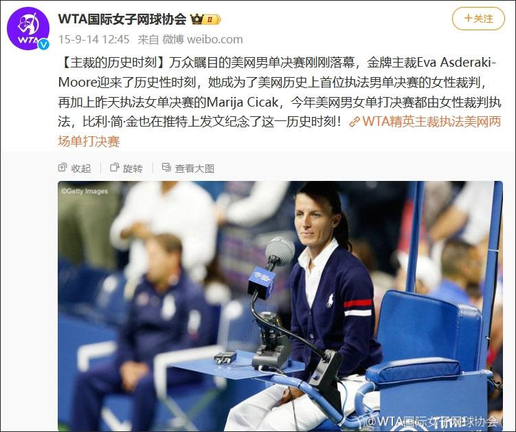
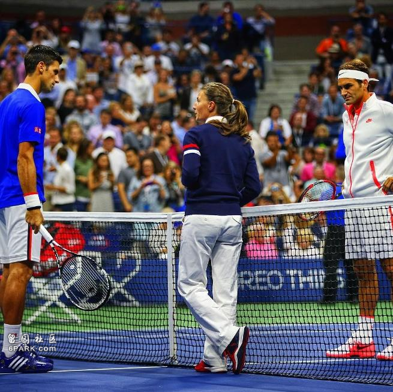
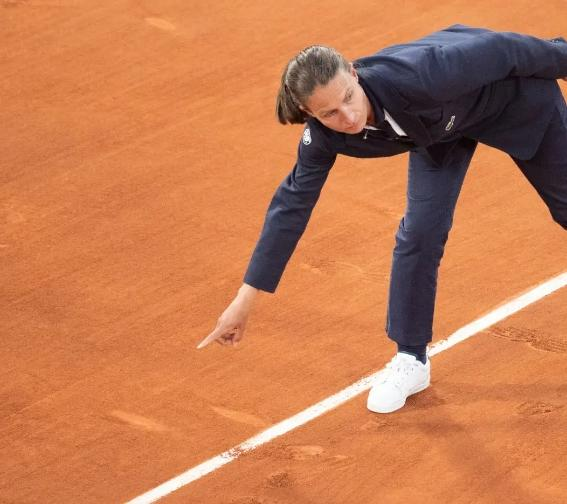

【文/观察者网 严珊珊】当地时间8月3日举行的巴黎奥运会网球女单决赛，中国选手郑钦文直落两盘战胜克罗地亚选手多娜·维基奇，夺取中国乃至亚洲历史上首枚奥运会个人网球金牌。
首盘一个关键分的判罚，让本场比赛的希腊主裁伊娃·阿斯德纳基-莫尔（Eva Asderaki-Moore）登上热搜首位。她在维基奇挑战判罚时立即下场，示意维基奇看压线的球印，并判定郑钦文击球未出界的一幕，令人印象深刻。
罗兰·加洛斯球场内，这位气场强大、判罚精准的女主裁得到了球迷的一致认可。其实这位“人工鹰眼”，早已是网坛的“金牌主裁”。
综合多家外媒报道，早在2015年，当时33岁的伊娃成为美网历史上男单决赛首位女主裁，并因那场比赛的精准执法一战成名，赛后网上热度超过决赛两位选手——德约科维奇和费德勒。

当地时间2024年8月3日，法国巴黎，2024巴黎奥运会网球女单决赛，主裁伊娃请选手维基奇查看球印。 视觉中国由于本届巴黎奥运会征用的是大满贯赛事法网的罗兰·加洛斯红土球场，这种软性球场不同于硬地和草地赛场，土场相对松软，网球弹跳过的位置会留下痕迹，因此在现场判罚中，一般不使用“鹰眼”（即时回放系统）作为辅助。如果出现争议球，主裁会在必要情况下检查球印。
在巴黎奥运会网球女单决赛中，第一盘前七局，郑钦文5:2维基奇，第八局中，维基奇质疑郑钦文的压线球出界，向判罚提出挑战。
见状，主裁伊娃二话不说，从裁判椅上走下来，径直走向刚才的落球点，确认球印压线后，示意维基奇过来看一眼。本来不服气的维基奇只好笑着走过去，仔细看了看球落地带飞的边界白土。

当地时间2024年8月3日，法国巴黎，2024巴黎奥运会网球女单决赛，郑钦文VS维基奇。 东方IC这一步骤后，伊娃维持原判，比赛继续。没多久，郑钦文就拿下了第一盘。

奥运会官网显示，网球女单决赛主裁为来自希腊的伊娃·阿斯德纳基-莫尔巴黎奥运会官网赛后，伊娃的判罚赢得了球迷好评，其以往精彩的执法经历也被翻出。
1982年1月27日，伊娃出生于希腊，她从小学习网球，青少年时期战绩不错，曾在希腊16岁以下网球选手中排名第7。15岁那年，她因为在俱乐部组织的网球赛事中担任裁判，开始了网球执法生涯。
2000年，伊娃第一次走出希腊，担任国际赛事裁判；2007年，她开始执法WTA（国际女子网球协会）赛事；2011年，她在温网和美网女子单打比赛中担任裁判。
在2011年的美网女单决赛中，东道主名将“小威”（塞雷娜·威廉姆斯）迎战澳洲选手斯托瑟，比赛进行到第二盘开局时，小威发球后大吼了一声，遭到伊娃警告，随后小威走向伊娃提出交涉，但伊娃没有动摇，最终小威被判直接罚分，引发东道主观众不满。小威赛后指责伊娃“内心丑陋”，后来又说认错人，把伊娃当成另一个之前惹恼自己的裁判了。
2015年，伊娃成为美网男单决赛首位女主裁，那场比赛由德约科维奇对阵费德勒，备受瞩目。

据《华盛顿邮报》报道，在那场高手对决中，伊娃扛住了压力，三次驳回边裁误判，并被“鹰眼”证明改判全部正确。在德约科维奇和费德勒对其判罚提出挑战时，伊娃也都证明自己没看错。
WTA Instagram账号这场比赛让伊娃在网坛打响名头，同为网球主裁的布鲁斯·利特雷尔（Bruce Littrell）对“今日美国”称，“你要么有能力做到，要么没有……我们很幸运，世界上有一位女性能执法男子决赛，这位置是她应得的。”
赛后的推特（X平台前身）上，伊娃受到的关注超过了两位参赛的网坛“天王”，有人称伊娃是当之无愧的男单决赛“MVP”。还有不少职业网球选手发文称，伊娃在重压之下确保了比赛的公正性，希望自己的比赛以后也能有伊娃保驾护航。
2018年，在联合会杯（现更名为比利·简·金杯）女双比赛中，怀孕的伊娃上场执法，赛前掷硬币时，伊娃问选手们有无问题，球员则问其怀的是男孩还是女孩，贡献了温馨的画面。
澳大利亚第七频道
如今，42岁的伊娃再次凭借精准判罚闪耀巴黎赛场，有网友称，除了场上努力拼搏的郑钦文和维基奇，“网球女单决赛裁判也是个狠人”。

资料图：伊娃2021年担任法网男单半决赛主裁时也曾下场确认球印